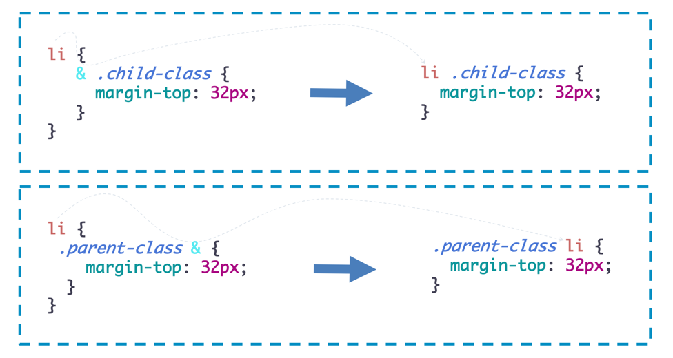

Css Nesting Module
Adam Arglye's recent tweet super excited me ü§©. But why?
In the tweet Adam Argyle linked to the latest CSS Nesting Module draft that Tab Atkins and he are working on.
✍️ Here are the few points that we are going to cover in this lesson:
- We will begin by understand the problems that common CSS pre-processors like Sass solves using nesting.
- Look at some limitations of using pre-processors all the time.
- Finally the most exciting part!. Well learn how CSS Working Group is proposing to solve this problem natively.
The Problem
Let's look at a very simple at the same time a very real world example:

There are two .sibling elements. They have a .parent which is inside our #app. Simple. One of the .sibling has different kind of lists inside it. The HTML structure could be something like the following:
<div id="app">
<div class="parent">
parent
<div class="sibling sibling1">
sibling1
<div class="grandchild grandchild1">
grandchild 1
</div>
</div><!-- sibling1 ends -->
<div class="sibling sibling2">
sibling2
<ul>
<li>Coffee</li>
<li>Tea</li>
<li>Milk</li>
</ul>
<ol>
<li>Exercise</li>
<li>Wrok</li>
<li>play</li>
</ol>
</div><!-- sibling2 ends -->
</div><!-- parent ends -->
</div><!-- #app ends -->
Scenario: There are some styles specific to different lists inside .sibling. The styles are specific to .parent inside #app. We need to reduce the margin-top and margin-bottom of list items to 2px and keep the margin-top of the first list-item and the margin-bottom of the last list item to 32px.
The css would look like the following:
#app .parent .sibling ol > li,
#app .parent .sibling ul > li {
margin: 2px 0;
}
#app .parent .sibling ol > li:first-of-type,
#app .parent .sibling ul > li:first-of-type {
margin-top: 32px;
}
#app .parent .sibling ol > li:last-of-type,
#app .parent .sibling ul > li:last-of-type {
margin-bottom: 32px;
}
ü§î Do you notice some problem here?
- The same parent selectors are re-written multiple times. It just not DRY.
- Looks like too much code for a very simple requirement
- No clear sturcture of visual hieriarchy
- It can be a maintenance nightmare in case we had to change parent or sibling classes.
How pre-processors try to solve the problem
Let's see how CSS Pre-processors like SASS solves this problem. This is how the SASS equivalent of the above code would look like:
#app .parent .sibling {
ol,
ul {
> li {
margin: 2px 0;
&:first-of-type {
margin-top: 32px;
}
&:last-of-type {
margin-bottom: 32px;
}
}
}
}
ü§ó Waoo!! look at that! The benifits are clearly visible:
- More natural syntax and easy to read in most cases
- Prevents the need to rewrite selectors multiple times
- Better code organization and structure thanks to its visual hierarchy, which bring us to...
- More maintainable code.
⚠️ A side warning!
Use nesting only where there is a clear context selector, for example a component. Nesting too deeply is not considered a good practice. The deeper you nest, the more verbose the SASS file becomes and the larger the compiled CSS will potentially be, since the nesting is flattened when compiled. So, overuse of nesting can create:
- Overly specific CSS rules that are hard to maintain
- Selectors that cannot be reused
- Performance issues. Nested selectors will create a long CSS selector string that will end up generating a bigger CSS file
- Hard to text search and
- Over use can make it very hard to reason about and make it very unreadable
üëµ Your grandma was correct. Everything in moderation!!. Too much of everything is bad.
Nesting can be incredibly useful if used wisely.
The Power of &
Let us understand the wonderful little character ampersand (&) a little more. In Sass, & references the parent selector of a declaration block, allowing the selector to be referenced from within itself.
This means things like pseudo selectors, sibling selectors, and so on can be referenced and grouped with that selector’s other declarations. & is a powerful tool to organize and extend your Sass.
The key to understanding the power of & in Sass is its placement in a declaration. In the above examples, & was the first character, but there are cases where & can be used later in a declaration. In situations where the parent containing the selector causes the styles of the selector to change, we can reference the parent selector from within the selector’s declaration block. This is done by adding the parent selector before & in a new declaration block.
In the following illustration you can see how SASS spits out different CSS based on the placement of &.

Scenario: If the #app contains a class called .dark-theme we need to invert the color of list items. We want to keep the code inside our context to keep it organised and at one place.
Our Sass code for the above scenario could look something like this:
.parent .sibling {
ol,
ul {
> li {
margin: 2px 0;
#app.dark-theme & {
color: white;
background-color: black;
}
&:first-of-type {
margin-top: 32px;
}
&:last-of-type {
margin-bottom: 32px;
}
}
}
}
And the out-put could looke similar to the following (if #app div contains the class .dark-theme):

Awesome!!
Feel free to practice and fiddle around with the above SASS example here
The need of nesting in native CSS?
CSS Pre-processors are doing a decent job! aren't they?. Why do we even need nesting in the native CSS?
We once raised similar kind of question of CSS Custom Properties as well. Sass style $variables were very useful but now, as far as possible, we never use them over CSS Custom Properties. Custom Properties took a while but boy did they make up for turning up late – as part of the language they are infinitely more powerful than Sass style variable plus malleable with JS too.
Sass variable are not after the compilation when they reach the browser. This just make it totally useless with Javascript. But in case of CSS Custom Properties, What we write is what browser gets. An this opens up a world of possililites. It much better to change a CSS Custom Property by Javascript than to inject css in DOM.
Here are a couple of benifits of nesting in native CSS that I can think of:
- CSS Pre-processing takes time. In large project it is a big-time time killer.
- CSS file size can, in some cases, be dramatically reduced. Remember that preprocessors ultimately transpile into standard CSS, so what you write isn’t quite what the browser gets.
W3C CSS Nesting - Editor's draft
Yes, it’s an Editor’s Draft, meaning it — and by extension everything we discuss here — is subject to major changes through its development, but in my opinion, the fact that it’s a W3C draft! is in itself worth exploring.
The nesting selector &
When using a nested style rule, one must be able to refer to the elements matched by the parent rule; that is, after all, the entire point of nesting. To accomplish that, this specification defines a new selector, the nesting selector, written as an ASCII ampersand &.
The way & is proposed to work natively is quite similar to the way it works in SASS.
For example following is a valid syntax as per the draft:
.foo {
color: blue;
& .bar { color: red; }
}
/* equivalent to
.foo { color: blue; }
.foo .bar { color: red; }
*/
But one major difference to be noted here is that even for direct nesting, we require the nesting selector &.
The followig is an invalid syntax:
.foo {
color: red;
.bar { color: blue; }
}
/* Invalid because there’s no nesting selector */
So, when ever the parser will encounter & it will get to know that some sort of nesting is going on. The parser will happily be able to parse the nesting styles if before the nested selectors it is able to find an &
Hence, all of these are going to be valid nestings: & > .bar , &.bar , & + .baz, &.qux, &:not(.foo,.bar) > .baz, &:is(.bar, &.baz) . You can clearly see a pattern here that before nested selectors we always have an &.
It doesn’t matter if the & appears before a combinator or directly before another simple selector; as long as it appears at the very beginning of each complex selector, the rule can be directly nested.
Cool!! and Super reasonable. The use of & in a case where it’s typically not needed when using a preprocessor. The key difference between standard nesting and what we’re used to is that the nesting selector must appear in all the complex selectors of a nested style rule. This is to accommodate a limitation in the current, tried and true implementation of selector parsers, which the spec details in the introduction of section 3.
But what about the parent selectors within child selectors?
The following becomes invalid:
.foo {
color: red;
.parent-class & { color: blue; }
}
/* Invalid because & isn’t in the first compound selector */
The parser wont be able to parse .parent-class &.
The Nesting At-Rule: @nest
In order to allow the valid nesting selectors like .parent-class & and also to provide a little more robustness to the feature of nesting, the secification defines the @nest rule. The actual nesting magic still happens with &. But adding @nest before the nested selector gives more flexiblity on the placement of &
The magic of nesting still happends because of
&.@nestjust adds a little more robustness and flexibility to the syntax.
Now with the help of @nest the following is completely valid as per the specification:
.foo {
color: red;
@nest .parent-class & { color: blue; }
}
Putting a @nest here too wont do any harm:
.foo {
color: red;
@nest & .bar { color: blue; }
}
Along with direct nesting, the @nest at-rule is introduced so we can explicitly nest any rule that contains a nesting selector anywhere in each of its complex selectors.
The exact same SASS example above, when written in plain CSS, in future will look like the following as per the current draft:
#app .parent div {
border: 1px dashed brown;
padding: 5px;
margin: 5px;
}
.parent .sibling {
& ol,
& ul {
& > li {
margin: 2px 0;
@nest #app.dark-theme & {
color: white;
background-color: black;
}
&:first-of-type {
margin-top: 32px;
}
&:last-of-type {
margin-bottom: 32px;
}
}
}
}
Feel free to practice and play around with the The nesting selector & and the @nest at-rule here
Practical CSS Nesting Exercises
Exercise 1.
Modify the practice-fiddle to just make the color of the li's inside ul red by making use of @nest at-rule
practice-fiddle | solution-fiddle
Exercise 2.
Fix the following broken practice-fiddle, The li's doesn't look black in the practice-fiddle.
practice-fiddle | solution-fiddle
Exercise 3.
Fix the following broken practice-fiddle. The li's doesn't look black in the practice-fiddle.
practice-fiddle | solution-fiddle
Video Walkthrough
Test your knowledge
The Demo App Result
- Coffee
- Tea
- Milk
- Exercise
- Wrok
- play